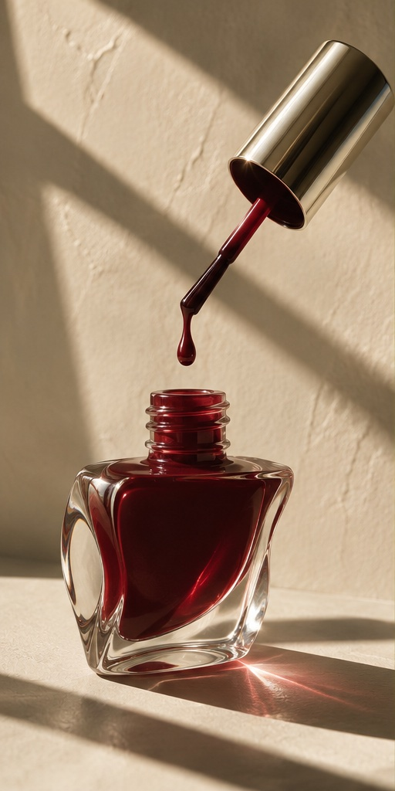
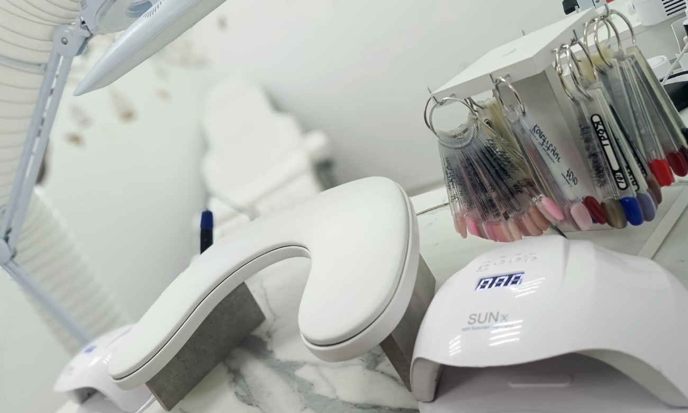
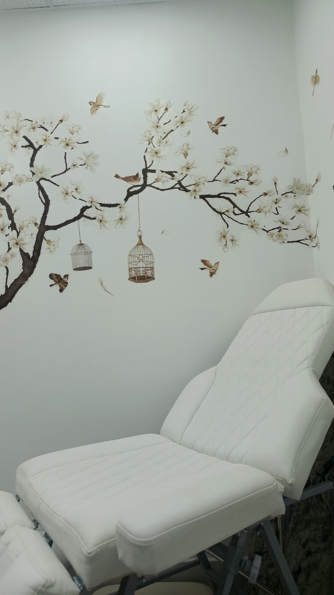

Палитра студии
Выберите работу, чтобы рассмотреть покрытие крупным планом.
В студии
У CALYPSO свой кабинет на Ленинском проспекте. Инструменты проходят стерилизацию, а перед визитом можно обсудить форму, цвет и дизайн с мастером.
Читать отзывы на Яндекс Картах

До встречи
в Calypso
Санкт-Петербург
Ленинский проспект, 74к3
Ленинский проспект, 74к3
Ежедневно с 10:00 до 22:00
+7 (911) 191-55-59